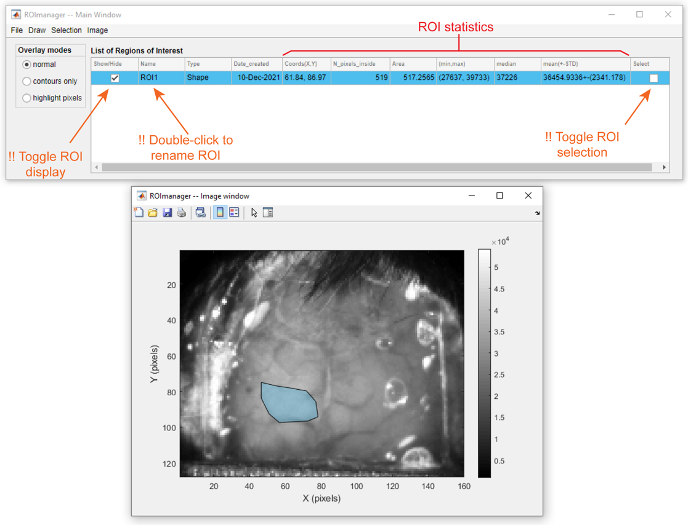
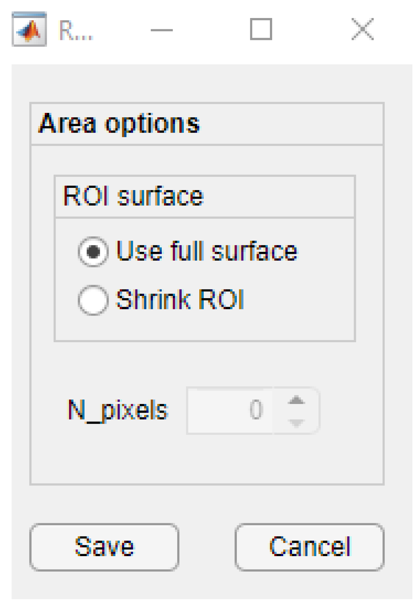
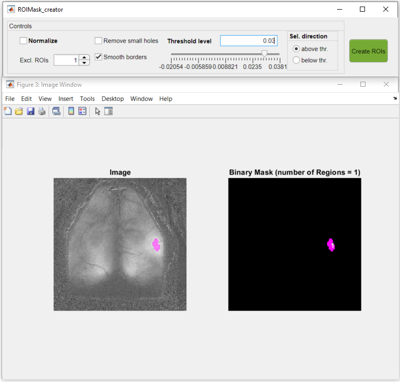

Main components of ROImanager app
ROImanager is a graphical interface dedicated to create, edit and save regions of interest (ROIs) associated to an image. In addition, it provides preset ROIs of the top projection of mouse cortical areas from the Mouse Allen Brain Atlas. The ROImanager app can be called from the Visualization tab, from the Add-ons tab in the DataViewer app or as standalone (see syntax below).
ROImanager(): Opens only the main GUI.
ROImanager('C:/PATH/datFile.dat'): Opens the first frame of the imaging data from datFile.dat. The .dat file created by one of the analysis functions of umIT.
ROImanager(data): Opens the image contained in the variable data from the Matlab's workspace. data can be either a 2-D numeric matrix or a 3-D matrix encoding an RGB image. In the latter case, the app will automatically transform the data in a grayscale image using Matlab's built-in function rgb2gray.
ROImanager('C:/PATH/ROImasks_data.mat'): Opens the image and ROIs contained in the ROImasks_data.mat. The ROImasks_xxxxx.mat is created by ROImanager to store ROI information.
Main components of ROImanager app
Note
The ROImanager app accepts ROIs only in the following formats:
Note
ROIs are selected by checking the boxes in the Selection column of the ROI table.
Important
Works only with polygonal ROIs!
There are 3 options to display the ROIs over the image:


Panel showing the current values of the image parameters:
A table containing the ROI name, type (Shape or point), date of creation, centroid coordinates as well as descriptive statistics of the ROIs and selected pixels.

ROI table components and interactions
Important
The descriptive statistics of the ROIs (min/max, median, mean(+-STD)) refer to the ROI pixels from the frame used at the moment of the ROI creation. This information is not automatically updated when the frame is changed!
Figure containing the image (frame) used to plot the ROIs. This figure is absent when ROImanager is called as an Add-on from the DataViewer app.
To draw a new polygonal ROI:

Steps to create a polygonal ROI
Now, to edit the ROI:

Example of constrained edit of a polygonal ROI

Example of unconstrained edit of a polygonal ROI
Point ROIs consist of a single pixel. This type of ROI does not allow any type of editing. Thus, if you want to change the location of the ROI, you can simply create a new point with the same name of the one that you want to change.
Here, you can select a pixel from the image interactively OR type the pixel's X,Y coordinates.
To create a point ROI:

Example of interactive selection of point ROI

Example of selection of point ROI using X,Y coordinates
The preset ROIs were created from the top projection of the mouse cortical areas (see image below) obtained from the Mouse Allen Brain Atlas.

ROI template from top view of the Allen Mouse Brain Atlas
Note
Note: The position of the Bregma is provided here as a rough estimate. The data from the Allen Mouse Brain Atlas does not provide any anatomical landmark coordinates from the mouse skull. For more info on this, see this discussion from the Allen Brain Map Community Forum.
Tip
For a more accurate result, it is advisable to set Bregma as the image origin and to set the image pixel size before drawing the ROIs from the Mouse Brain Atlas. Once these parameters are set, the ROI mask will be automatically place the atlas mask estimated Bregma over the origin point and resize it to fit the image's pixel ratio.
There are two modes for the Mouse Brain Atlas preset ROIs: Areas and Centroids. The Areas option draws the full surface of each cortical area while the Centroids option creates a circle around the region's centroid. Optional parameters for each mode can be set by clicking on Create >> Mouse Allen Brain Atlas >> (Areas/Centroids) >> Options....
One can choose to use the full surface of each ROI (default) or to shrink it by N pixels. This only affects the selected pixels inside the ROIs and not the shape themselves.

Area Options
The shrinking algorithm removes pixels from the ROI border:
Example of shrinking of the Left primary visual cortex ROI by removing 15 pixels from the ROI border
One can choose the radius of the circles in pixels (default = 1 px) and in millimeters. The latter is only available if the image pixel size is already set.
Centroid options
Note
If the ROIs are larger than the cortical areas themselves, the circles will automatically intersect with the region's borders to avoid selecting pixels outside the selected ROIs.
Once the options are set (either for Areas or Centroids), click on Select (Areas/Centroids) button. A table containing the columns acronyms, names, functional modality and Selection will appear.

Table of available ROIs from the Mouse Allen Brain Atlas
Tip
For checking/uncheking multiple chekboxes from the Selected column, first highlight the cells, then click outside the table and press Enter.
After checking the areas, close the window to confirm.
After areas selection, a mask is plotted over the image and can be fitted using a constrained edit method:

How to create ROIs from the Mouse Brain Atlas
This option creates ROIs based on pixel values above or below a certain threshold. Go to Create >> From threshold... to launch the tool (ROImask Creator).
Main components of ROImask Creator tool
Note
When both Remove small holes and Smooth borders are selected, the app performs a morphological closing followed by an opening.
Window containing the grayscaled image (left) and the binary mask (right). The ROIs created by the threshold are overlayed on both images and numbered on the binary mask.
Once all parameters are set in the control panel(1), simply click on the green button (Create ROIs) to generate the ROIs. The new ROIs will be added to the ROI table in ROImanager app with the notation : newROI_<NUMBER>

Example of ROI delimiting an area with pixel values above 0.03

Resulting ROI added to the ROI table and shown in the DataViewer interface.
Tip
It is advisable to create a logical mask before loading the ROImasks Creator tool. The tool will use the mask to exclude unwanted regions of the image and thus, i will consider only the pixels inside the mask in the threshold calculation.
Applies a logical mask to the image. The logical mask is used by the ROImanager app to exclude areas of the image during ROI creation (for details, see the rules for ROI fitting). In addition the logical mask is used by some of umIT's analysis functions as a variable in a Imaging reference frame file (for details see this section).
To draw a new mask:

Steps to create/draw a logical mask using 2 regions.
Note
When drawing more than one region, the final mask will contain the union of all regions drawn (as the example above).
Note
A note on importing logical masks: the ROImanager app accepts masks stored in a variable as a logical 2D array (i.e. matrix) in a .mat file.
The ROI math option allows one to perform the following operations on existing ROIs:
In order to perform the desired operation, select the ROI(s) by checking the ROIs box in the Select column of the ROI table and go to Selection >> ROI math >> <OPERATION MENU>. A preview figure will be available to assess the result of the operation and confirm. At the end, you can edit the name(s) of the new ROI(s).
Important
Please, note that the original ROIs used in the operation will be replaced by the resulting ROI(s)!
This operation works with only ONE multi-region ROI. A multi-region ROI consists of an ROI with two or more non-contiguous (isolated) areas:

Steps to split a multi-region ROI.
Here, one can merge two or more ROIs together into a single ROI:

Steps to merge ROIs.
This operation retrieves the overlapping region(s) between the selected ROIs. This option accepts two or more ROIs as input.

Steps to intersect ROIs.
This operation retrieves the non-overlapping regions between two or more ROIs. In other words, it gives the inverse of the intersection of ROIs.
Tip
Although, more than two ROIs are accepted for this operation, it is advisable to perform it with two ROIs at a time.
Here is an example of XOR operation between two ROIs:

Steps to perform XOR operation between two ROIs.
This operation subtracts one ROI from another. Here, only two ROIs are accepted!

Steps to subtract two ROIs.
An Imaging reference frame file stores a reference image - and some meta data - to be used by the analysis functions from umIT. For instance, one can use the reference frame to align different recordings (see this tutorial) or use one of the extra variables such as the logical mask to exclude pixels in some analysis such as the GSR function.
The main information saved in the Imaging reference frame file include:
In order to create the Imaging reference frame, one can simply go to Image >>Image reference file... >> Export and select the folder and name of the file (default: ImagingReferenceFrame.mat) to save the current frame as the reference frame. However, it is advisable to set all image parameters (origin, pixel size, colormap and logical mask) before creating the file. Here is a brief description on how to set the main image parameters:
To create a new reference point (i.e. origin), go to Image >> Set origin >> New. Here, you can select a point in the image to be the new origin (0,0) of the cartesian coordinates. In the example below, we will select an anatomical landmark from the mouse skull(Bregma) as the origin. To select a new origin, click and drag the green dot to the desired location and right-click to save. The image's axis will be shifted to match the new origin point.
Note
Once the new origin is set, the X,Y coordinates and Distance from Origin variables from the ROI table are updated to match the new coordinates.

How to set a new origin point.
Notice that the image in the example above is slightly rotated. To adjust the image's angle, go to Image >> Set origin >> Align image to origin. Click and drag the moving point to the area on the image that is supposed to be vertically aligned with the origin. In our example, we will use the Lambda landmark of the mouse skull to align the frame:

How to rotate the image around the origin.
One can also import the origin coordinates from a .mat file. To do so, go to Image >> Set origin >> Import from file.... Then you can open a .mat file and select the variable containing the X and Y coordinates. The variable must be a numerical array with dimensions 1X2.

How to import X,Y coordinates from .mat file as a new origin.
To set the image's pixel size, simply go to Image >> Set pixel size and type the image's pixel ratio in pixel per millimeter:
Note
As for the origin, once the pixel size is set the units in the columns X,Y coordinates and Distance from Origin are changed to millimeter.
Tip
To erase the pixel size and reset the axis units and ROI coordinates back to pixels, just set the pixel ratio to zero.
To change the colormap and the color scale, go to Image >> Set colormap:
Important
If the ROImanager app was opened as Add-on from the DataViewer app, the button Set colormap from ROImanager is disabled. You can access the colormap settings from the DataViewer interface instead.
To learn how to create or import a logical mask, read this section.
Note
As stated in this section's introduction, a logical mask is useful to exclude unwanted pixels during an analysis function. For instance, the function GSR (removes global variance from the recording) uses the ImagingReferenceFrame file as input and loads the logical mask to include only the pixels inside the mask in the calculation of the global variance. Therefore, if your recordings contain non-pertinent areas, it is advisable to create and save a logical mask to delimit the region of interest.
The ROImanager app will automatically detect if the ROIs are over an invalid region of the image. Invalid regions consist of:
If the ROI is completely inside an invalid region, it will be deleted. However, if the ROI is partially inside an invalid region, the app will redraw the ROI to exclude the invalid pixels.
Important
For partially invalid ROIs that are very small, there is a risk that the redrawing process yields an empty ROI. In this case, the ROI will be erased and you will be notified.
The example below illustrates the creation of ROIs containing invalid and partially invalid ROIs:
How the ROImanager app deals with invalid and partially invalid ROIs. Invalid ROIs are deleted while partially invalid ROIs are redrawn.